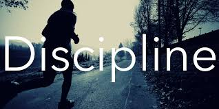

Julio 1 de 2020
¿Que es el Trading?
DICIPLINA
El trading consiste en la compra y venta de activos, como puedan ser acciónes, futuros, divisas o derivados, en un mercado financiero. Para hacer trading, de manera que obtengamos beneficios, deberemos especular con los movimientos en el precio de los activos. Por ello, el trading se suele realizar en el corto plazo.
El trading es el arte de negociar y/o especular en los mercados financieros con el objetivo de generar rentabilidades en el tiempo. A diferencia de una “inversión”, el trading es más de corto plazo; semanas, días, horas e incluso minutos. Se puede realizar trading en divisas, commodities, acciones, futuros, etc.
Julio 2 de 2020
Efocate en el proceso y los resultados llegaran solos
RENTABILIDAD
Quizá como la mayoría de los traders minoristas te preguntes si se puede vivir del trading. En este artículo vamos a darte unos trucos que te ayudarán a conocer las claves del trading y a ser un Forex trader. Como verás más adelante, vivir del trading no es siempre posible, pero lo que sí es posible es conseguir que tu inversión sea rentable.
Si estás interesado en cómo vivir del trading, sigue leyendo porque hablaremos de psicología, tácticas de trading, y cómo obtener formación gratuita para aprender a invertir. La formación es, sin duda, la mejor estrategia para ganar en trading y ser un verdadero trader.